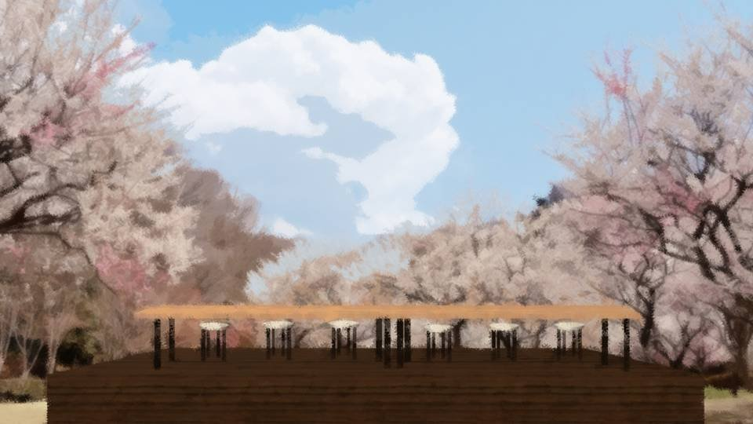
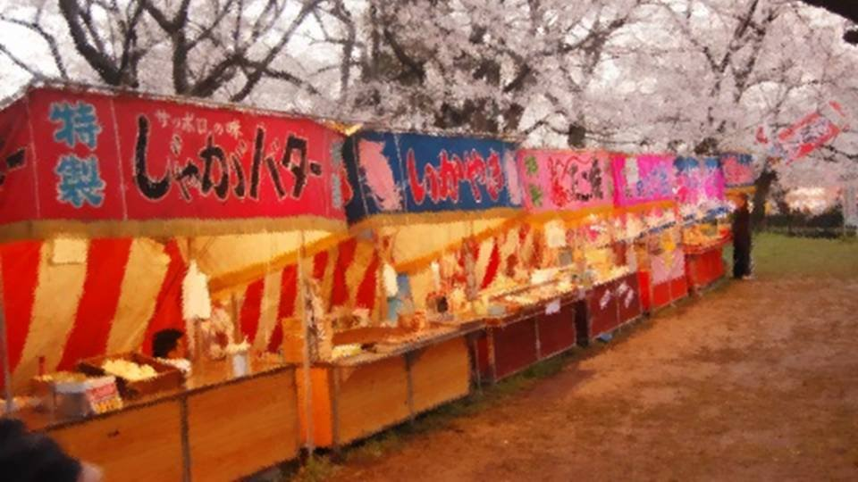
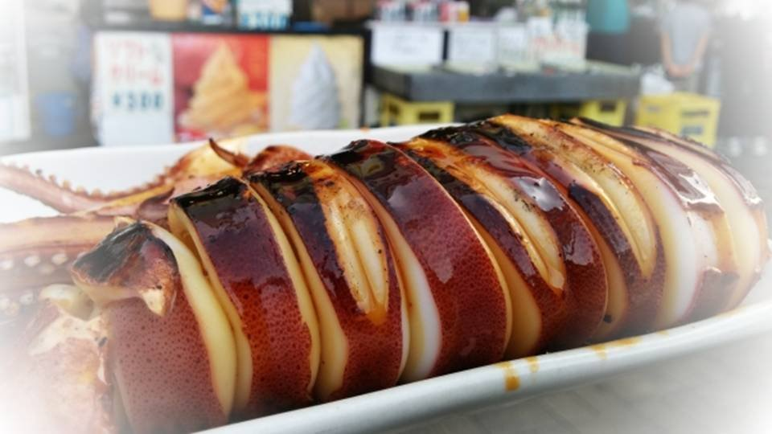

This scene is not unlocked yet in your progress
The Maidens' Holy War ~Queen~
After enjoying some cherry-blossom viewing with Niimura-senpai in Central Park, I'm riding my bicycle.
Everyone, can you guess where I'm about to go?
Home? Cram school? Or the bookstore?
Wrong on all counts.
Right now, I'm heading to Central Park.
Everyone, can you guess where I'm about to go?
Home? Cram school? Or the bookstore?
Wrong on all counts.
Right now, I'm heading to Central Park.
Heading from Central Park to Central Park: that's me, Erina Goto.
Most of you must have question marks floating over your heads.
But there are cases where the starting point and the destination are the same.
That's―yes, when you've forgotten something.
Right now, I'm heading back to Central Park to get back something I forgot.
Most of you must have question marks floating over your heads.
But there are cases where the starting point and the destination are the same.
That's―yes, when you've forgotten something.
Right now, I'm heading back to Central Park to get back something I forgot.
No, to be precise, rather than forgetting something, I should say I remembered an errand.
If I forgot this errand, I would disappoint the 40,000 people of Motoki-cho.
That event I haven't missed once since the year before last.
That event being held today!
And that is―
If I forgot this errand, I would disappoint the 40,000 people of Motoki-cho.
That event I haven't missed once since the year before last.
That event being held today!
And that is―

"Everyone! At last, this day has come around again this year!
The 70th Motoki Cherry Blossom Festival! And today, we hold its biggest event, the 3rd Motoki-cho Spring Eating Conteeeeeest!"
Applause rises from all around. There are definitely more people in the park than when I was here with Niimura-senpai a little while ago.
Applause rises from all around. There are definitely more people in the park than when I was here with Niimura-senpai a little while ago.
Looks like I somehow made it in time for the contest.
As the favorite to win, I'm the hero. That's why I show up late.
That said, maybe my lateness was a bit half-hearted... I made it back with 5 minutes to spare.
As the favorite to win, I'm the hero. That's why I show up late.
That said, maybe my lateness was a bit half-hearted... I made it back with 5 minutes to spare.
"Now, contestants! Please come up on stage!"
The emcee keeps the greeting short, and the contestants take the stage.
One, two, three, four... Hmm, five participants, counting me.
Every one of them someone I beat last year.
The emcee keeps the greeting short, and the contestants take the stage.
One, two, three, four... Hmm, five participants, counting me.
Every one of them someone I beat last year.
All the participants glare at me, but I brush it off with a big, easy grin.
Heh, glaring means nothing. Whoever eats is justice!
Heh, glaring means nothing. Whoever eats is justice!
On the stage there are chairs and a long table, with six chairs set out.
Even though there are five participants. Is someone running late?
Even though there are five participants. Is someone running late?
"And now, everyone! Believe it or not, a challenger appears! Please come on out!"
A challenger? If she's appearing separately from the rest of us, does that mean she's the special guest?
A challenger? If she's appearing separately from the rest of us, does that mean she's the special guest?
The one who appears when called is a slender woman.
Her age... a little over 20, maybe?
Her age... a little over 20, maybe?
"Hey, isn't that the champion from the other day?"
"Yeah, yeah! She was on TV!"
Champion...? TV...?
I take another look at the guest's face.
Don't know her...
"Yeah, yeah! She was on TV!"
Champion...? TV...?
I take another look at the guest's face.
Don't know her...
"Well, the venue seems to be starting to buzz...
That's right, she is the queen of competitive eating who took her first victory in fine style this past February, two months ago, on 'Big Eating Festival 800 ~Winter Battle~', broadcast nationwide on Japonica TV! It's Shinori Minamizaki!"
"Nice to meet you. My name is Shinori Minamizaki. I look forward to competing with you."
"Nice to meet you. My name is Shinori Minamizaki. I look forward to competing with you."
In contrast to the woman's polite greeting, the venue gets wildly excited.
I see, so this person is Japan's eating champion.
Coming out to an event in Motoki-cho like this, the champion must have time on her hands.
I see, so this person is Japan's eating champion.
Coming out to an event in Motoki-cho like this, the champion must have time on her hands.
Still, against an eating champion, I don't think I stand a chance.
I wouldn't say I've lost the will to fight, but I did eat all sorts of things with Niimura-senpai earlier...
Well, I'll eat for fun and help keep things lively.
I wouldn't say I've lost the will to fight, but I did eat all sorts of things with Niimura-senpai earlier...
Well, I'll eat for fun and help keep things lively.
The seat I'm shown to is right next to the champion.
I see, so the idea is to show the difference between the previous champion and the national champion.
Feels like I'm being used as a stepping stone, but oh well, never mind, never mind.
I see, so the idea is to show the difference between the previous champion and the national champion.
Feels like I'm being used as a stepping stone, but oh well, never mind, never mind.
"Last year's champion, Erina Goto, how about it? How does it feel to sit next to the national champion?"
Even if you ask how it feels, I don't know this person...
Minamizaki-san is looking my way with a smile that has no spite in it.
I'll just make some comment to liven things up.
Even if you ask how it feels, I don't know this person...
Minamizaki-san is looking my way with a smile that has no spite in it.
I'll just make some comment to liven things up.
"Um... At last, a challenger who can stand up to me has arrived! Champion or not, I'll send her packing!"
So, being me, I state my resolve a little cheekily, just for form's sake.
And then, applause and cheers in just about the amount I expected.
Honestly, this is kind of a pain...
So, being me, I state my resolve a little cheekily, just for form's sake.
And then, applause and cheers in just about the amount I expected.
Honestly, this is kind of a pain...
"Now, this year's dish is sauce yakisoba! 200 grams a plate!
The ingredients are provided by Motoki-cho's kitchen, 'Supermarket Hanamaru'! The cooking is done by the local housewives!"

A paper plate piled with sauce yakisoba is set in front of me.
Apparently we can sprinkle on pickled red ginger and green laver flakes as we like.
Mayonnaise... none, huh.
For me, mayonnaise is a must on sauce yakisoba, though.
Apparently we can sprinkle on pickled red ginger and green laver flakes as we like.
Mayonnaise... none, huh.
For me, mayonnaise is a must on sauce yakisoba, though.
"Now, at last, we begin the 3rd Motoki Eating Festival.
The time limit is 15 minutes! Please count down with me!"
Huh? Wasn't it the 3rd Motoki-cho Eating Contest? Pretty sloppy...
While I'm thinking that, the countdown hits 1, and I hurriedly pick up my chopsticks.
Huh? Wasn't it the 3rd Motoki-cho Eating Contest? Pretty sloppy...
While I'm thinking that, the countdown hits 1, and I hurriedly pick up my chopsticks.
"Begiiin!!"
As the emcee shouts, the mic howls with feedback, making it an ear-splitting starting signal.
As the emcee shouts, the mic howls with feedback, making it an ear-splitting starting signal.
At the same moment, I lift the yakisoba with my chopsticks.
But less steam rises from the noodles than I expected.
Ah, it's cooled down more than I thought.
But less steam rises from the noodles than I expected.
Ah, it's cooled down more than I thought.
I toss the yakisoba into my mouth.
Yeah, well, it tastes just like it looks, just as I expected. Not bad, not great.
First plate, done in 20 seconds. The next plate is set down right away.
Yeah, well, it tastes just like it looks, just as I expected. Not bad, not great.
First plate, done in 20 seconds. The next plate is set down right away.
Ugh, this one's even colder... My spirits are sinking.
Well, it's the same conditions for everyone, so as a competition it's fair, but I still want to eat deliciously and have fun.
More than anything, I want mayonnaise.
Well, it's the same conditions for everyone, so as a competition it's fair, but I still want to eat deliciously and have fun.
More than anything, I want mayonnaise.
"One minute has passed! All six have finished two plates!"
At this pace, that's 30 plates in 15 minutes, 6 kilos by weight.
Wow, that's a huge amount...
In my case, there's what I ate with Niimura-senpai, so it might be a bit of a handicap.
At this pace, that's 30 plates in 15 minutes, 6 kilos by weight.
Wow, that's a huge amount...
In my case, there's what I ate with Niimura-senpai, so it might be a bit of a handicap.
I start on my third plate.
"Hot!"
This time it seems to be really fresh off the griddle.
I lift a lot of noodles at once and blow on them all in one go.
"Hot!"
This time it seems to be really fresh off the griddle.
I lift a lot of noodles at once and blow on them all in one go.
Yeah, this hot, now we're talking! Delicious!
The slightly crispy charred bits you only get at a stall are great too.
My appetite naturally picks up.
But... I still want mayonnaise.
The slightly crispy charred bits you only get at a stall are great too.
My appetite naturally picks up.
But... I still want mayonnaise.
"Five minutes are almost up! Goto and national champion Minamizaki are tied at 10 plates!"
Huh? Am I putting up a surprisingly good fight against the champion?
I wasn't really planning to compete, but it's delicious, so I feel like I could eat any amount.
Huh? Am I putting up a surprisingly good fight against the champion?
I wasn't really planning to compete, but it's delicious, so I feel like I could eat any amount.
And after five minutes of eating all out, an ordinary person's stomach hits its limit right about here.
The pace of the four besides me and the champion drops all at once.
I steal a quick glance toward the champion.
The pace of the four besides me and the champion drops all at once.
I steal a quick glance toward the champion.
And at that very moment, our eyes meet.
It seems the champion has been staring at me.
I flash her a big grin just like that.
But for some reason the champion has a stern look on her face.
What's wrong? Surely she can't be at her limit already.
It seems the champion has been staring at me.
I flash her a big grin just like that.
But for some reason the champion has a stern look on her face.
What's wrong? Surely she can't be at her limit already.
Even so, eating this much of the same thing is pretty painful.
Even with pickled red ginger and green laver flakes, the taste doesn't change much.
I really want mayonnaise.
Even with pickled red ginger and green laver flakes, the taste doesn't change much.
I really want mayonnaise.
"Five minutes left! Facing these noodles that sit so heavy in the stomach, everyone's chopsticks have stopped except for Goto and Minamizaki!"
Hmm, I want a change in flavor... I miss mayonnaise...
Hmm, I want a change in flavor... I miss mayonnaise...
And then, at that moment―

"Here you go! Grilled squid's ready! Grilled squid that's super tasty with mayo-soy sauce!"
An alluring sound rings out from the stall right in front of the stage.
Grilled squid―
A single ray of light shining into this carbohydrate hell.
That springiness, and yet that pleasantly clean bite.
Mild, yet full of flavor, a taste that leaves you wanting more.
An alluring sound rings out from the stall right in front of the stage.
Grilled squid―
A single ray of light shining into this carbohydrate hell.
That springiness, and yet that pleasantly clean bite.
Mild, yet full of flavor, a taste that leaves you wanting more.
And most of all.
Ma yo soy sauce !
Ma yo soy sauce !
"Oh! Goto's hands have stopped!
Will last year's champion, who's hung on this far, go down in defeat here!?"
I want to eat it.
I want to eat it...! I want to eat it...!!
I want to eat grilled squid! I want to eat grilled squid with mayo-soy sauce!
I want to eat it.
I want to eat it...! I want to eat it...!!
I want to eat grilled squid! I want to eat grilled squid with mayo-soy sauce!
"One minute left! Goto has been moving her hands slowly for a while now, but her eyes are looking off somewhere else entirely!
At this rate, Minamizaki is going to take her crown!"
Grilled squid.
Grilled squid.
Mayo-soy sauce.
Mayo-soy sauce!
Grilled squid.
Grilled squid.
Mayo-soy sauce.
Mayo-soy sauce!
Grilled squid. Grilled squid. Grilled squid. Grilled squid. Grilled squid. Grilled squid. Grilled squid. Grilled squid. Grilled squid. Grilled squid. Grilled squid. Grilled squid. Grilled squid. Grilled squid. Grilled squid. Grilled squid. Grilled squid. Grilled squid. Grilled squid.
Ma
yo
soy
sauce !
"Sorry! I withdraw!"
"Whoa! With 30 seconds left, Goto suddenly withdraws! Has she decided she can't win like this after all!?"
I've withdrawn, so there's no point staying here anymore!
With the lightness of a ballerina, I leap off the stage and―
"Whoa! With 30 seconds left, Goto suddenly withdraws! Has she decided she can't win like this after all!?"
I've withdrawn, so there's no point staying here anymore!
With the lightness of a ballerina, I leap off the stage and―
"Excuse meee! Three grilled squid, please! Extra mayo!"
"Oh! Erina-chan, long time no see! Thanks as always!"
The grilled-squid man turns a smile my way.
How many meters was that long jump of mine from the stage?
"Oh! Erina-chan, long time no see! Thanks as always!"
The grilled-squid man turns a smile my way.
How many meters was that long jump of mine from the stage?

Grilled squid is held out in front of me.
The aroma of grilled squid, with plenty of mayo-soy sauce on the side.
Ah, this is it, this is it!
The aroma of grilled squid, with plenty of mayo-soy sauce on the side.
Ah, this is it, this is it!
The moment I grab the grilled squid, I bring one to my mouth.
But the grilled squid takes a very long time to reach my mouth.
That's how beautiful, how moving this sight is.
But the grilled squid takes a very long time to reach my mouth.
That's how beautiful, how moving this sight is.
The squid's body, giving off the scent of mayo and reflecting the light of a spring day.
Soy sauce of a clear amber color.
This aroma isn't from soybean lees; it's the aroma of naturally brewed soy sauce.
And then the chili powder sprinkled on as if it were on the house.
It flaunts the aroma of the sea, and of charcoal, completely different from sauce yakisoba.
Soy sauce of a clear amber color.
This aroma isn't from soybean lees; it's the aroma of naturally brewed soy sauce.
And then the chili powder sprinkled on as if it were on the house.
It flaunts the aroma of the sea, and of charcoal, completely different from sauce yakisoba.
The pleasant, squishy chew of the squid.
The squid flesh tearing off with a snap.
I lick off every bit of mayo on my lips.
Then comes the rich aroma of the soy sauce.
The tingle of the chili powder.
Ah... eating is... ha- ppi- ne- ss.
The squid flesh tearing off with a snap.
I lick off every bit of mayo on my lips.
Then comes the rich aroma of the soy sauce.
The tingle of the chili powder.
Ah... eating is... ha- ppi- ne- ss.
While I'm drowning in my ecstatic grilled-squid time, the awards ceremony is being held at the eating contest.
The champion, Shinori Minamizaki-san, wins with 18 plates.
I feel a strange gaze on my back.
The champion, Shinori Minamizaki-san, wins with 18 plates.
I feel a strange gaze on my back.
"Erina Goto-san... What would happen if she got serious?
Until you step onto the competitive-eating stage again, I'll keep getting stronger too.
I'm sure I'll meet you again."
Read ✓ Next: Paper Doll →